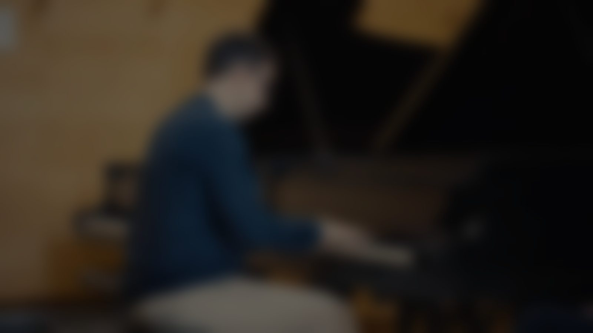
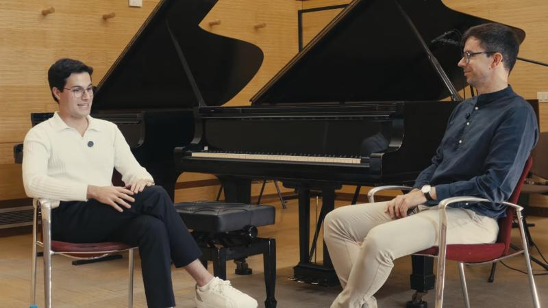
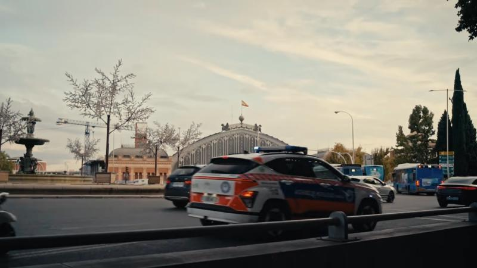
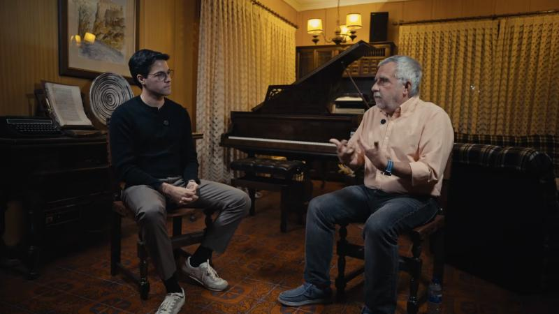
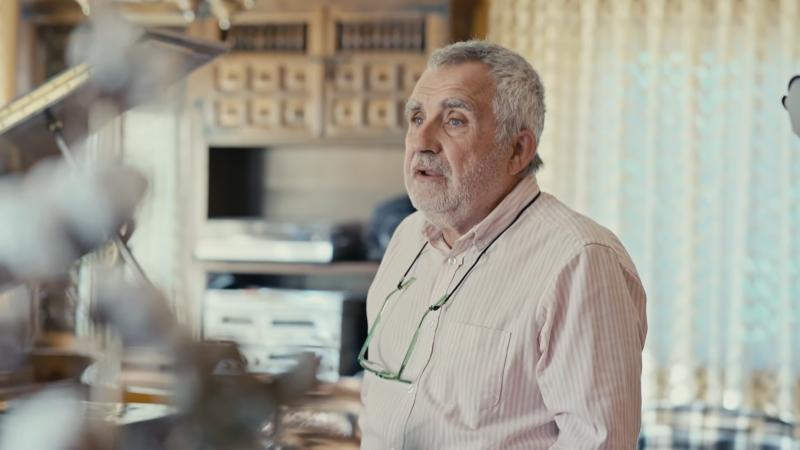
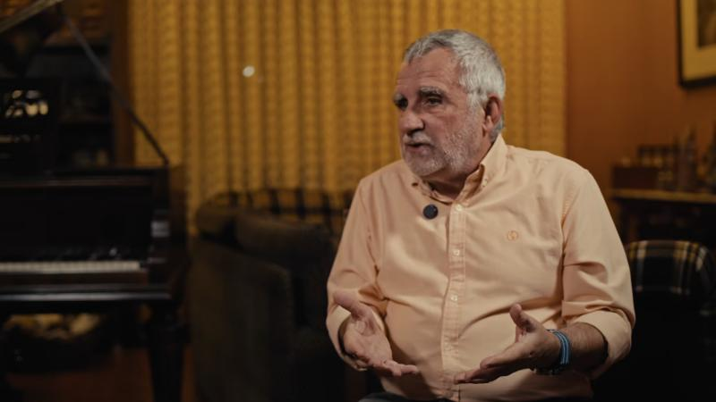

 MODERATO
MODERATO
STUDIO
Moderato Studio
Conoce
Moderato
Moderato es una indicación de tempo: ni deprisa ni despacio. Con medida, con intención y con el pulso justo.
Bajo ese nombre se hacen ensayos audiovisuales. Cada pieza se escribe antes de rodar, con una sola idea y sus fuentes. La música es su columna, y la imagen la sigue sin prisa, con luz cuidada y tiempo para mirar.
Lo que se ve es lo que ocurre alrededor de una obra: el estudio, los lugares, los libros y las ideas que la sostienen.
Esto es Moderato Studio.



Obras
Fotogramas

